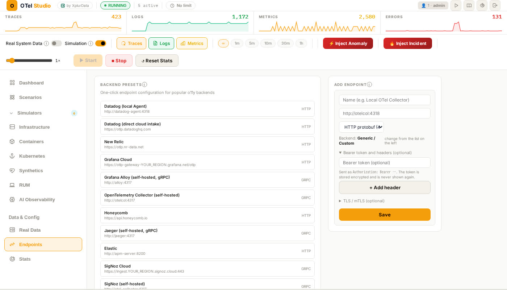

Backends and presets
OTel Studio speaks standard OTLP, so it can send to any OTLP receiver. The Endpoints page has presets that fill in the URL, protocol and the right authentication fields for popular destinations. Pick a preset, replace the placeholders (shown in capitals), enter your credentials and press Test. A base URL is enough: /v1/traces, /v1/logs and /v1/metrics are added for HTTP.

Presets
| Backend | Default URL | Protocol | Authentication sent |
|---|---|---|---|
| Datadog (local Agent) | http://datadog-agent:4318 | HTTP | None — the Agent handles it |
| Datadog (direct intake) | https://otlp.datadoghq.com | HTTP (protobuf only) | dd-api-key header; other Datadog sites use their own host |
| New Relic | https://otlp.nr-data.net | HTTP | api-key header (licence key) |
| Grafana Cloud | https://otlp-gateway-YOUR_REGION.grafana.net/otlp | HTTP | Basic authentication: instance ID and API token |
| Grafana Alloy | http://alloy:4317 | gRPC | None by default |
| OpenTelemetry Collector | http://otelcol:4317 | gRPC | None by default |
| Honeycomb | https://api.honeycomb.io | HTTP | x-honeycomb-team header; x-honeycomb-dataset for Classic accounts |
| Jaeger | http://jaeger:4317 | gRPC | None by default |
| Elastic APM | http://apm-server:8200 | HTTP (protobuf) | Authorization: Bearer secret token, or ApiKey |
| SigNoz Cloud | https://ingest.YOUR_REGION.signoz.cloud:443 | gRPC | signoz-ingestion-key header |
| SigNoz (self-hosted) | http://otel-collector:4317 | gRPC | None |
| OpenObserve | http://openobserve:5080/api/default | HTTP | Basic authentication: email and password; default is the organisation |
| Dynatrace | https://YOUR_ENV.live.dynatrace.com/api/v2/otlp | HTTP (protobuf only) | Authorization: Bearer platform token with OpenPipeline ingest scopes |
| Generic / custom | (your URL) | any | Bearer token and any headers you add |
Set up a local OpenTelemetry Collector in two minutes
The quickest way to see data arrive is a Collector that prints what it receives. Save this as otelcol.yaml:
receivers:
otlp:
protocols:
grpc:
endpoint: 0.0.0.0:4317
http:
endpoint: 0.0.0.0:4318
processors:
batch: {}
exporters:
debug:
verbosity: basic
service:
pipelines:
traces: {receivers: [otlp], processors: [batch], exporters: [debug]}
logs: {receivers: [otlp], processors: [batch], exporters: [debug]}
metrics: {receivers: [otlp], processors: [batch], exporters: [debug]}Run both containers on one Docker network so the hostname resolves:
docker network create otel
docker run -d --name otelcol --network otel \
-v $PWD/otelcol.yaml:/etc/otelcol-contrib/config.yaml \
otel/opentelemetry-collector-contrib:latest
docker run -d --name otel-studio --network otel -p 3002:3002 \
-e ADMIN_PASS="choose-a-password" \
-e OTEL_ENDPOINT="http://otelcol:4317" -e OTEL_PROTOCOL="grpc" \
ghcr.io/xplurdata/otel-studio:latest
docker logs -f otelcolOpen http://localhost:3002, press Start, and watch the collector log. From there you can add processors, exporters and your real backend one stage at a time — see how to test a collector configuration.
Connection tips
- Use the HTTP port for HTTP and the gRPC port for gRPC. By convention 4318 is HTTP and 4317 is gRPC. A gRPC endpoint given an HTTP port (or the other way round) connects but sends nothing useful. See gRPC vs HTTP.
localhostinside a container is the container. Reach another container by name on a shared network (--network), or reach the host with--add-host host.docker.internal:host-gateway.- Multi-tenant backends usually want a tenant header such as
X-Scope-OrgID— add it under "Bearer token and headers". See securing endpoints. - Read the Test result. “Credentials refused (HTTP 401/403)” means the address is right and the token or headers are wrong; “not accepted as OTLP (HTTP 404)” usually means a wrong path or port.
- Several backends at once: activate more than one endpoint to send identical data to each, for example to compare two products.